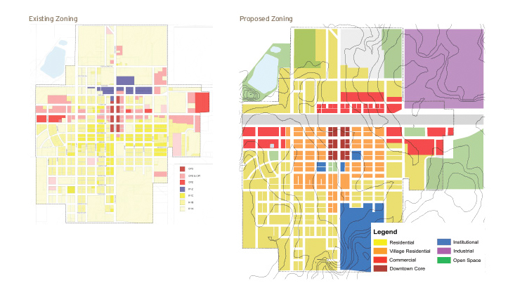
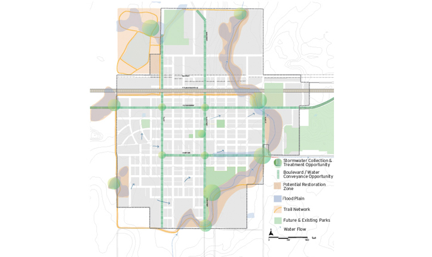
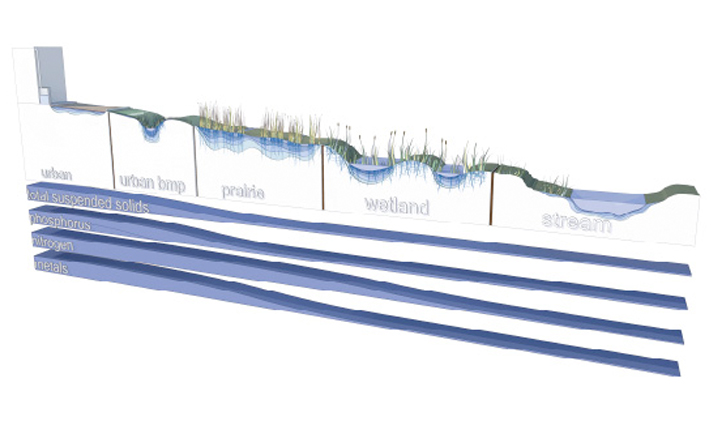
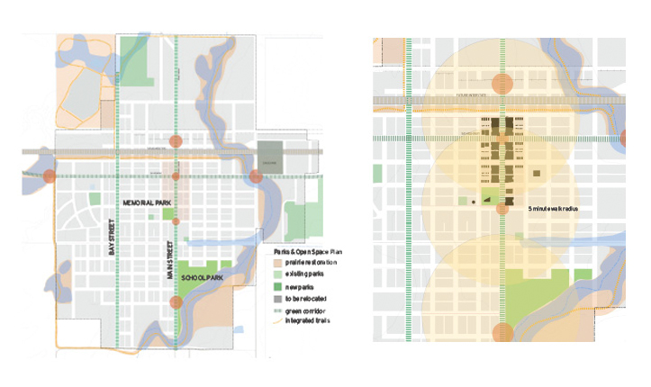
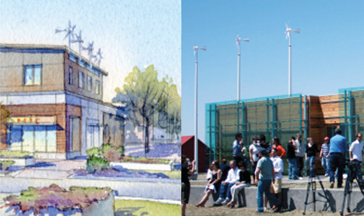
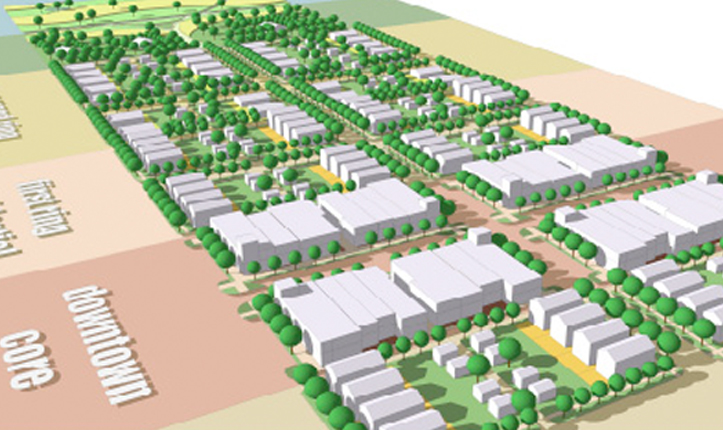
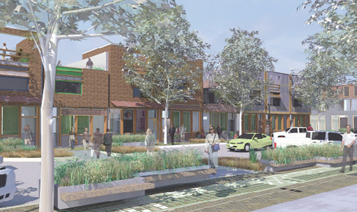

PROJECT TYPE
- Rural
- Town Master Plan
- Redevelopment Plan
Environmental Benefits
- Conserves Water
- Ecologically Manages Stormwater
- Generates Renewable Energy
- Reduces C02 Emissions

Links
Greensburg Sustainable Comprehensive Plan
Greensburg, Kansas, U.S.A.- 
Close Me!
There was a danger that many of Greensburg’s once complete neighborhoods will not be rebuilt at the same density, giving the appearance of “missing teeth.” To combat the growth of vacant lots, the Greensburg planning team recommended first focusing redevelopment efforts on the core and then spreading outwards, turning vacant lots into community gardens and creating a city-owned “land bank” to purchase vacant lots.
ASLA Honor Award Recipient, Greensburg Sustainable Comprehensive Plan by BNIM (Photo: © 2008 BNIM)
Photo 1 of 7
- 
Close Me!
Greensburg’s sustainable planners quickly saw the need for a sustainable stormwater management strategy. A truly integrated system can eliminate flooding by slowing and decreasing runoff volume, improving water quality, and ultimately helping create a community with zero stormwater runoff. Stormwater systems embedded in streetscapes and parks were also critical to the plan.
ASLA Honor Award Recipient, Greensburg Sustainable Comprehensive Plan by BNIM (Photo: © 2008 BNIM)
Photo 2 of 7
- 
Close Me!
The planners outlined a “natural water treatment train,” which represents the flow of stormwater from the time the water falls as precipitation to when it is either absorbed into the ground or rejoins the atmosphere due to evaporation. Each part of the “train” plays a part in moving, purifying, or infiltratingthe water. The system was designed with local plants, soils, and climate in mind.
ASLA Honor Award Recipient, Greensburg Sustainable Comprehensive Plan by BNIM (Photo: © 2008 BNIM)
Photo 3 of 7
- 
Close Me!
Before the tornado, Greensburg’s parks were isolated. The planners outlined a new park and trail network that would flow into pedestrian streetscapes. New sidewalks were designed to include trees, benches, and lighting to encourage walking. Redevelopment plans were also designed to encourage all key locations to be within five minutes walking distance (each circle radius represents a five-minute walk).
ASLA Honor Award Recipient, Greensburg Sustainable Comprehensive Plan by BNIM (Photo: © 2008 BNIM)
Photo 4 of 7
- 
Close Me!
While Greensburg was destroyed by wind, the city is now turning to this renewable energy source as their answer to becoming sustainable. Greensburg is located in one of the windiest parts of Kansas. To use the renewable energy wisely, the city of Greensburg is also focused on energy-efficiency, requiring that all new city buildings be LEED Platinum.
ASLA Honor Award Recipient, Greensburg Sustainable Comprehensive Plan by BNIM (Photo: © 2008 BNIM)
Photo 5 of 7
- 
Close Me!
Greensburg’s residents wanted a walkable community with a “small town feel.” The new plan focuses on compact residential development around the downtown core, encouraging community interaction and the economic viability of local businesses. Front porches help residents keep an eye on streets.
ASLA Honor Award Recipient, Greensburg Sustainable Comprehensive Plan by BNIM (Photo: © 2008 BNIM)
Photo 6 of 7
- 
Close Me!
The new downtown’s streetscape will be composed of native plants watered with harvested rainwater. Local businesses are housed in durable, healthy, and efficient buildings. Residents settled on a downtown plan with traditional Midwestern town elements, but wider pedestian zones and mixed use developments.
ASLA Honor Award Recipient, Greensburg Sustainable Comprehensive Plan by BNIM (Photo: © 2008 BNIM)
Photo 7 of 7
Project Facts
- A tornado destroyed 90 percent of Greensburg in 2007.
- The town has 1,574 residents — many participated in developing the new green master plan.
- The sustainable plan includes more parks and open space.
- Greensburg’s sustainable master plan offers a strategy for energy-efficiency, green jobs, and improved health through walking and biking.
 This Web site has been made possible through a grant by:
This Web site has been made possible through a grant by: